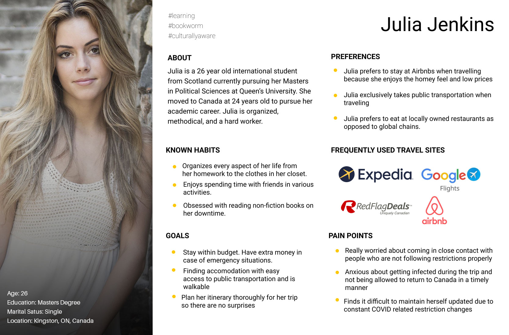
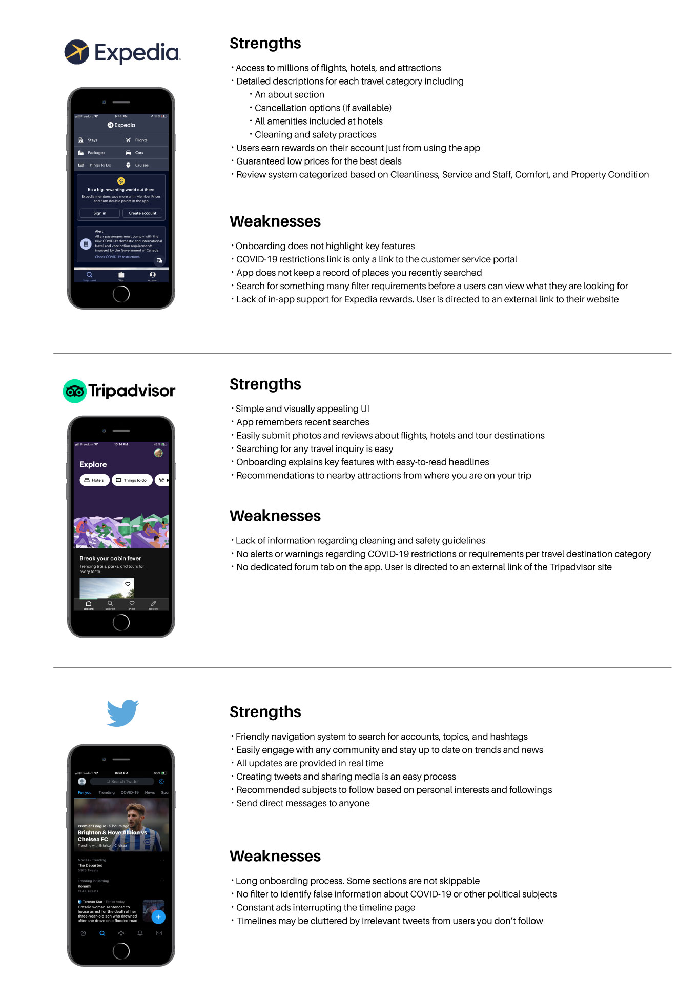
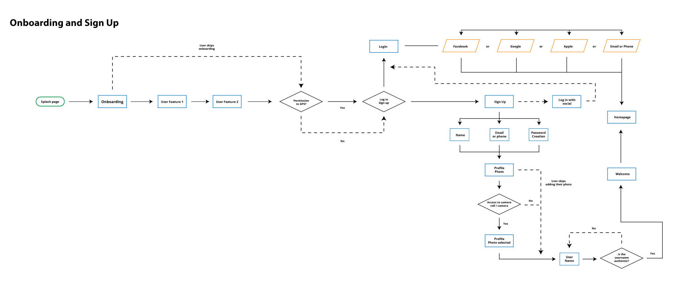
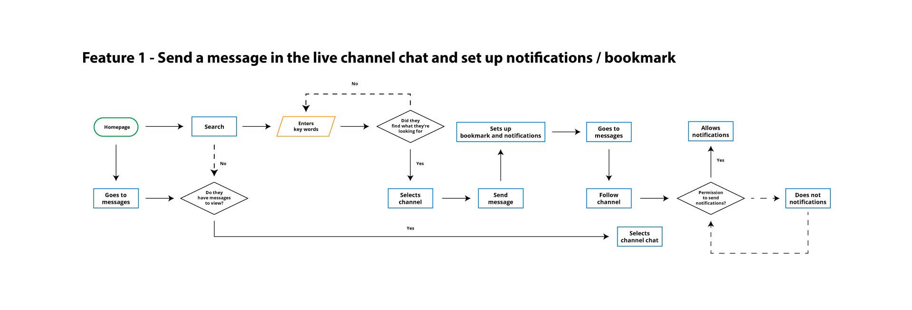
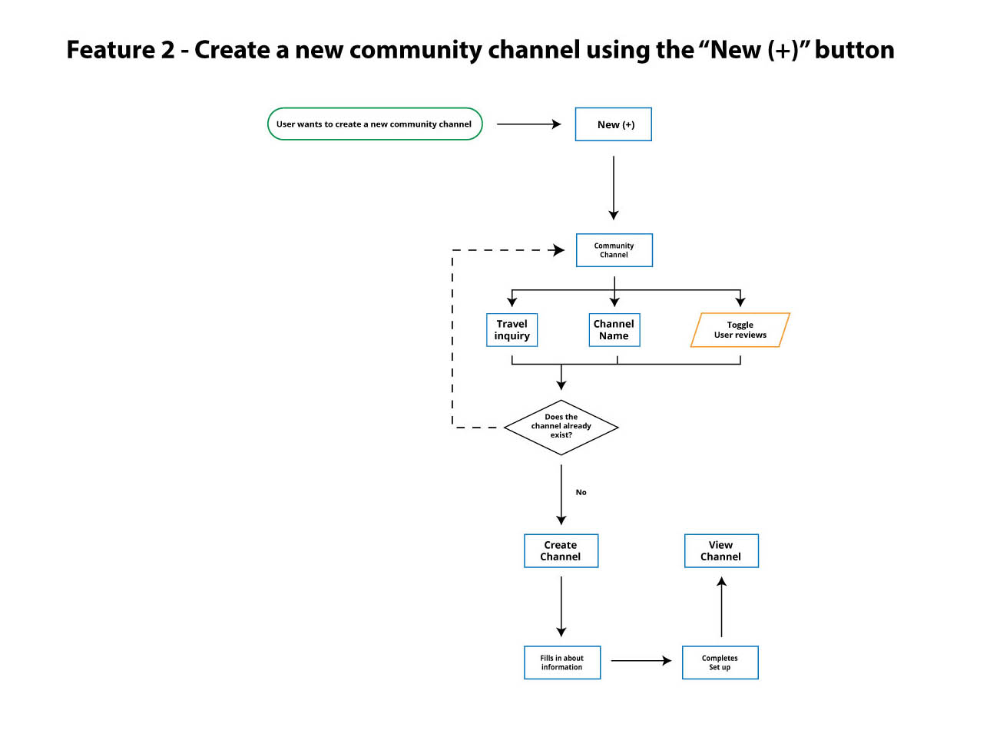
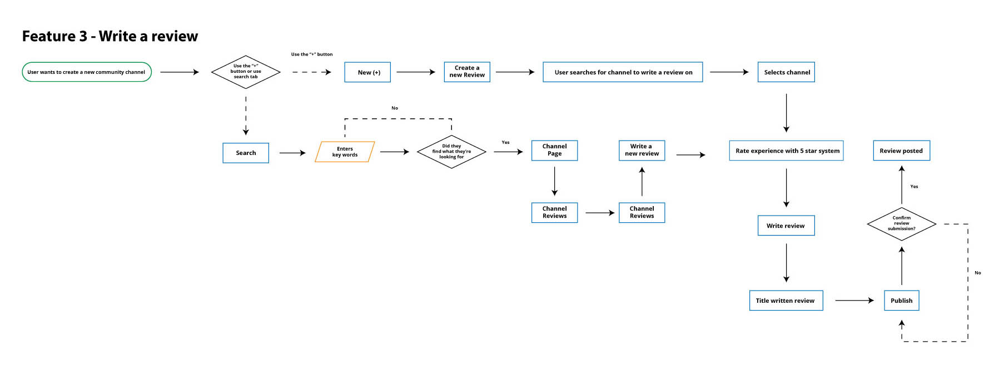
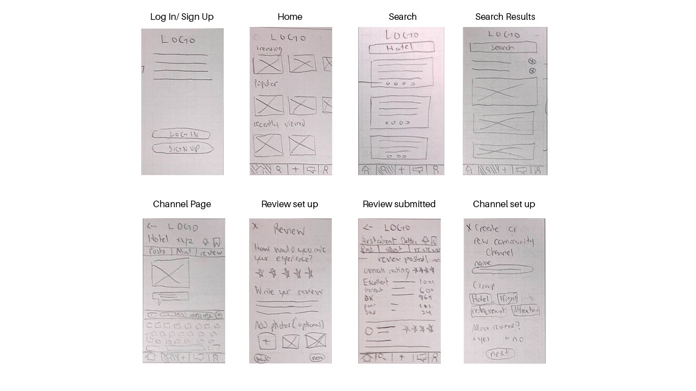
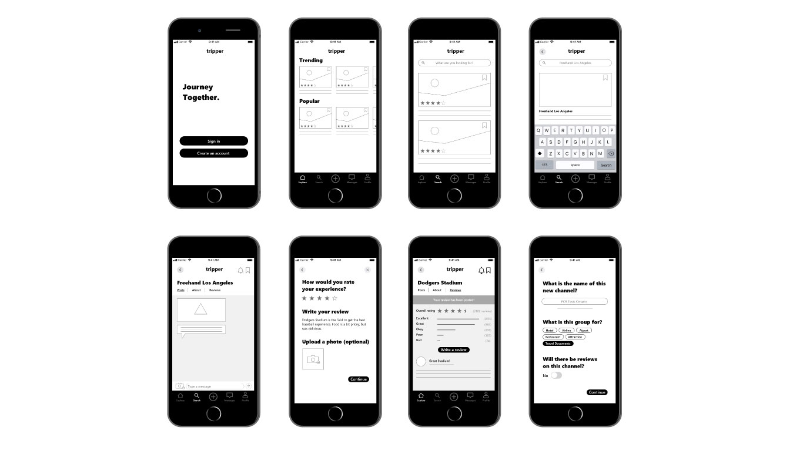

Tripper travel app concept
Project Overview
Students of the University of Toronto UX/UI bootcamp were challenged to develop an app for travellers to use after the COVID-19 pandemic. Tripper connects travelers who can share their thoughts, feelings and experiences about any destination. They can send a message to anyone, anytime, and anywhere to let others know what is happening now in world that is in constant change. Users can explore the world while staying informed with a trusted community content.
My Role
This solo project was completed during a 4 week sprint. I individually performed user research, brainstorming, wireframing, prototyping and usability tests.

Design Process

User Research
The first step of the process was understanding what travellers pain points are. To gather relevant information, I sent a Google Forms survey to fellow classmates and friends to find people who have travelled at least once during the pandemic, either domestically or internationally. 5 participants were selected from that survey. I asked each participant 10 questions about their experiences to get a better perspective about the target audience:
- In your survey you said you have traveled during the pandemic. Where did you go and how was the trip?
- What were you worried about the most when organizing the trip?
- What did you use to organize your trip? (booking, itinerary)
- Why did you choose (chosen tool)?
- Did your booking tools give you any COVID based information about your destination?
- How were you able to access your trip information upon traveling? (i.e. checking flight times before departing/the day of departing)
- How did you feel using (said tool)?
- How did you check for travel restrictions and requirements for entry for the location you visited?
- Why did you choose (said tool)?
- How did you feel using (said tool)?
- What could have made your trip organizing experience better/easier?
- How do you feel about traveling once the pandemic settles?
After interviews, I sorted key findings and common responses into an affinity diagram.


Persona
A persona was developed to represent a potential post-pandemic traveller, based on my interview findings. Julia Jenkins addresses pain points, personality, and goals that Tripper could solve.
How might we communicate with travellers like Julia to relieve her anxieties so that she stays informed and feel safe on her next trip?
Based on our user research, data suggests travelers will use social media and word-of-mouth information to know more about their next travel destinations. Using government websites or checking for news sources can sometimes be confusing to understand.
I brainstormed POV statements in the form of I Like, I Wish, What if? to get perspective on what Julia might need to make her travel experience safe. Dot voting was conducted with classmates to see what they would want for the app.
Feature Matrix chart
After voting, I placed each statement on a feature matrix to determine what can be implemented that would make impact for developing the app

User Journey Map
I continued to understand Julia's perspective and the experience she might have had while travelling. I developed a journey map based on the persona, to determine where she might be struggling. I started the journey map during the planning stages and ended just before the departure of her trip.

Competitor Analysis
To get a better insight into the app market for social media and travel, I focused on analyzing Twitter, Expedia, and TripAdvisor. I've identified these apps as potential competitors because they have similar features that Tripper would have.
Through my research, I have found there was a lack of COVID-19 support on Expedia and TripAdvisor for hotels, flights, and travel destinations. Users would have to do their own research on safety guidelines. Twitter has issues with unverified sources spreading potentially false information. Constant ads made the browsing experience annoying.
User Flows
I created flows for the onboarding process and 3 key features. The first feature is searching for a channel for hotels and sending a message in the chat. The second is for creating a new channel. The third feature is for writing a review.
   Sketches
The user flows were then converted into sketches to determine the layout and hierarchy of elements. I drew sketches for each stage of all user flows to show how each screen will be displayed.
Digital wireframes
Once the sketches were complete, I moved on to designing digital wireframes. I also prototyped each screen using Adobe XD.
Remote usability Tests
I conducted remote usability tests online with 4 participants over Zoom calls. I asked each participant to also screen record their phone so I can see how they interact with each screen. The Zoom calls were to record their physical reactions. The test contained 4 unique tasks the user had to complete.
- Task 1: Onboarding and account creation
- Task 2: Send a message to a group channel
- Task 3: Write a review
- Task 4: Create a new community channel
Test Results

Iterations
Due to the short time frame of the project, I focused on emphasizing how key features worked for the app in the onboarding process.
Prototype
Next Steps
- Improve the UI by creating a style guide to determine colour, typography rules and grid alignment
- Develop the profile section of the app. Users would be able to customize their own profiles and add itinerary plans to share with others online. Users can also view all the channels they follow and see every review they have written.
- Determine how channel ownership is handled. Implement multiple owners of a single channel. Establishments such as restaurants can also create a channel for their business
Learnings
This project has given me a first glimpse at the process of designing a new app from research to design. As someone who hasn't travelled in a long time, it was difficult to determine what objectives I wanted to focus on. After conducting interviews, I was able to empathize with the pain and frustrations people have had while travelling during these uncertain times. People want social interaction because it makes them feel comfortable knowing others are experiencing similar issues. News sources and governments may not have that personal relationship with the public compared to friends and family.